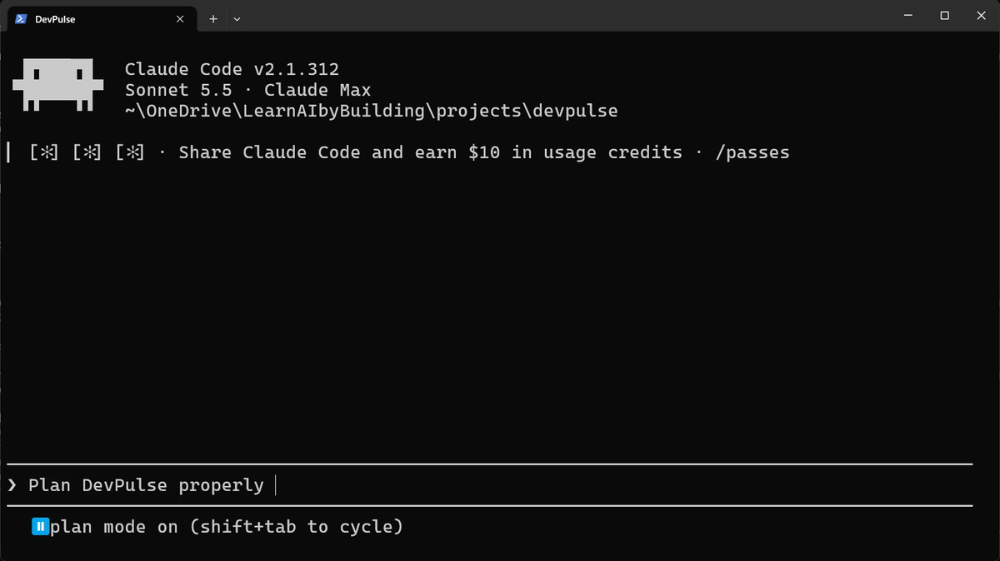
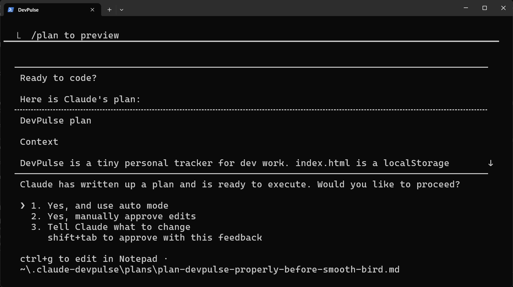
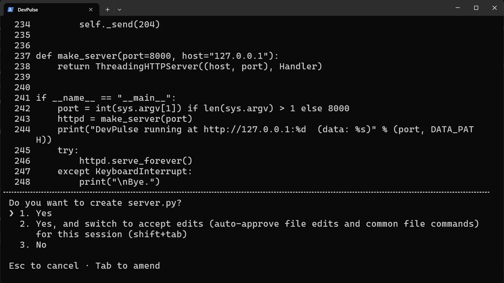
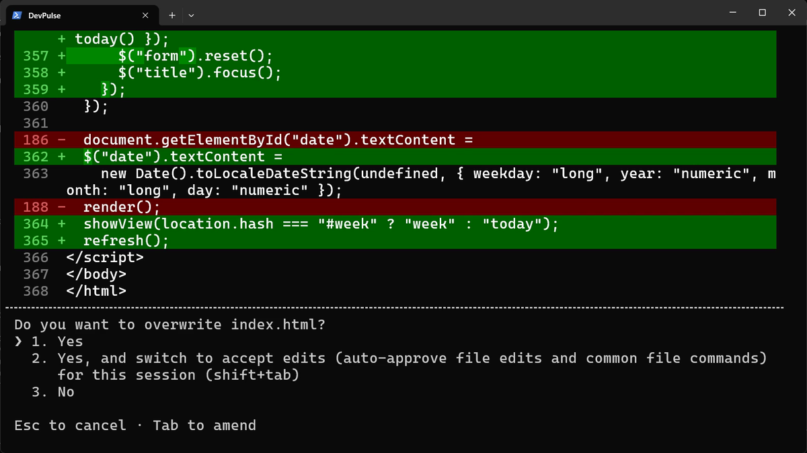
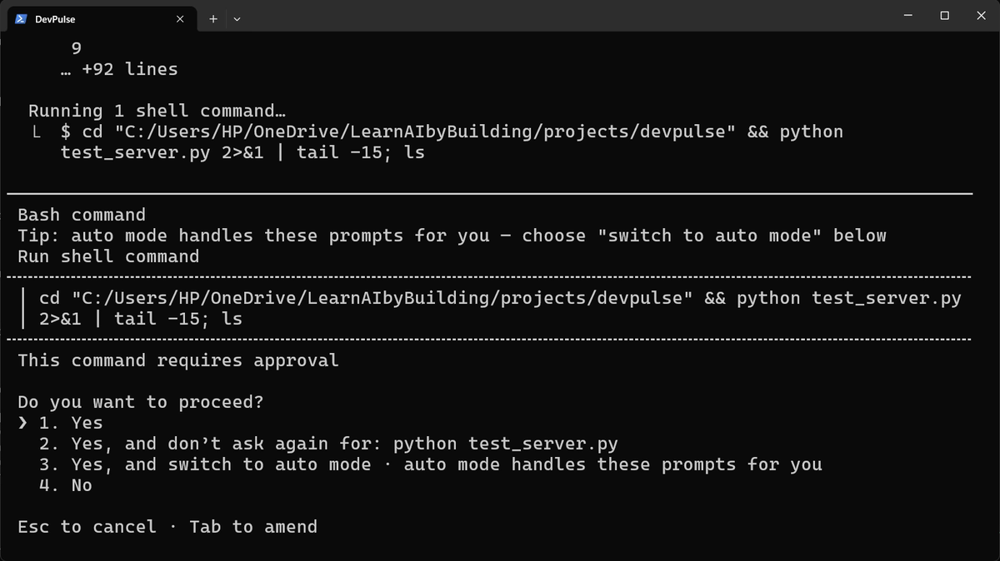
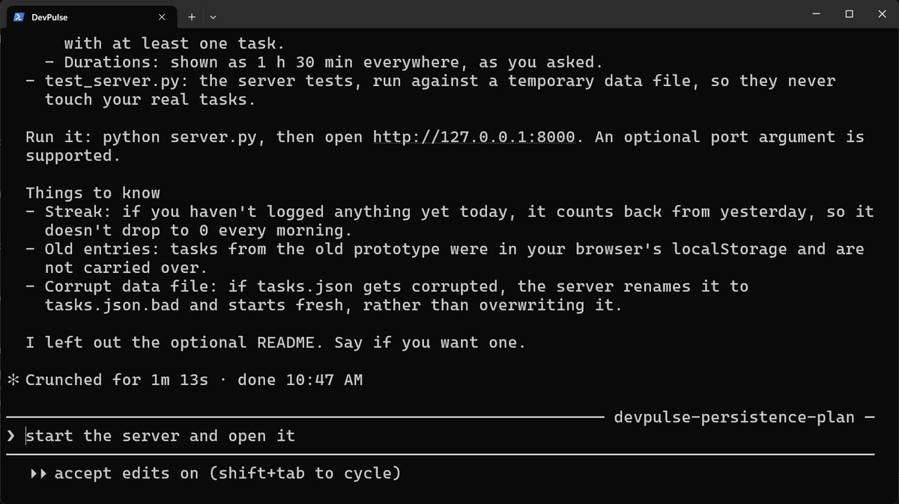
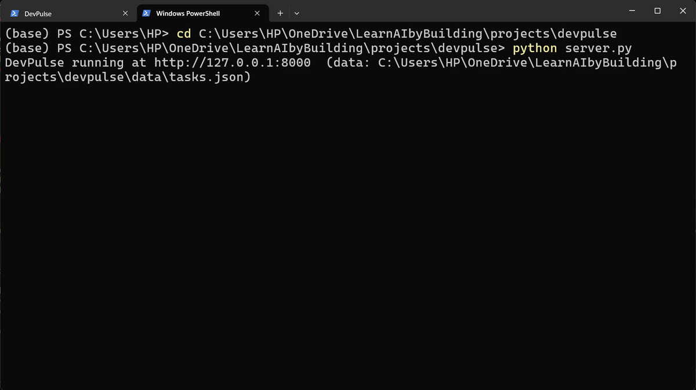
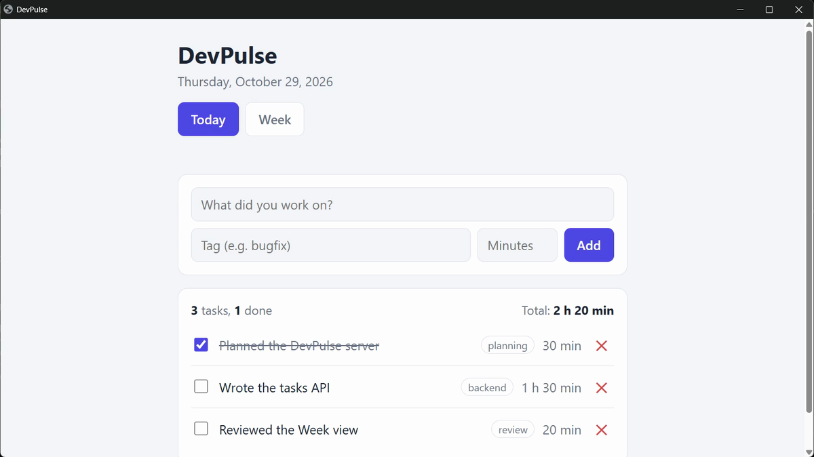
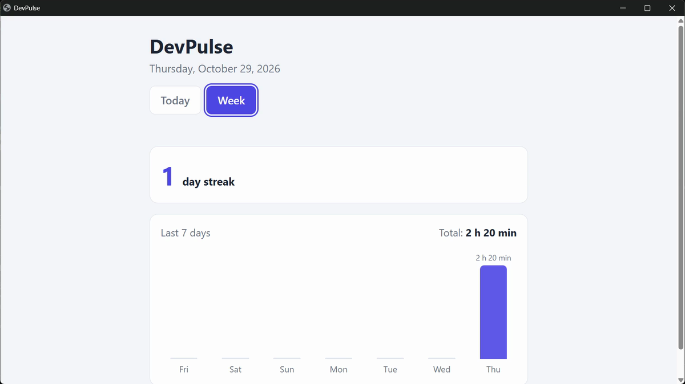

index.html, in your projects\devpulse folder.It decided everything without you
In chapter 1, Claude built a page in 19 seconds. It chose to save the tasks in one browser. It added a delete button and a dark mode. It asked nothing.
Say a builder makes your kitchen without asking where you want the sink. It may be a fine kitchen. It is still not yours.
How do you make Claude Code ask you first, and show you the plan before it writes any code?
Four modes, one key
Start Claude Code in your folder, as before. Now look at the line under the input box. It says auto mode on.
Press Shift+Tab. The line changes. Press it again, and again. There are four modes:
| Mode | What Claude does |
|---|---|
| auto | Decides for itself; asks only when an action looks risky. The default. |
| manual | Asks before every file change and every command. |
| accept edits | Changes files freely; still asks before commands. |
| plan | Reads and asks questions. Writes nothing until you approve a plan. |
Stop at plan mode.

Ask for a plan, not for code
This time we describe what we want, and we invite questions.
Claude reads the folder first. Then it asks four questions, one at a time, each with choices. Here are the four, and what we picked:
- Keep chapter 1's page, or start again? Evolve it.
- What is a tag? Free text, one per task.
- Do unfinished tasks count in the Week view? All tasks count.
- Which seven days make a week? The last 7 days.
Answer with the arrow keys and Enter.
Answer these questions while you are at the screen. In our recording, a question left alone for about half a minute was answered with the recommended choice. Read, then pick.
Change the plan before any code
Now Claude writes a plan and asks if it may go ahead.

Choosing 3 prints the whole plan in the conversation, so you can read it. It lists the files, the data, the views and how it will be tested. Then type your change.
Claude updates the plan and asks again. This time choose 2. Yes, manually approve edits. Now it will ask before each file it writes.
Three answers to "Do you want to…?"
First it wants to create server.py. You see the code it is about to write, and a question.

Next it wants to change index.html. A change to an existing file shows in red and green: red lines go, green lines come in.

Then it wants to run its tests. Commands still ask, even in accept edits.

So you have three answers: yes once, yes for the session, or no. Say yes freely to what you would do yourself. Say no to anything you do not understand.

Run the server in a second tab
DevPulse now has a small server. It must keep running while you use the page, so give it its own terminal tab. In Windows Terminal, press Ctrl+Shift+T for a new tab, then go to your folder.

data\tasks.json.Open http://127.0.0.1:8000 in your browser. Add three tasks, each with a tag. Tick one as done. Then press F5.


What planning costs, and what is still missing
Planning took longer than in chapter 1. You read questions, a plan and three prompts. That is the price. In return, every decision in this version was yours.
But close Claude Code and start it again tomorrow. Will it remember that tasks live in data/tasks.json, or that times show as "1 h 30 min"?
It will not. A new session starts with an empty memory. That is chapter 3.
Quick reference
| Command or key | What it does | Use it when |
|---|---|---|
Shift+Tab | Cycles the modes: auto, manual, accept edits, plan | You want Claude to ask more, or less |
plan mode | Claude reads and asks, and writes nothing until you approve | The change is big, or the decisions are yours |
Tell Claude what to change | Shows the full plan and lets you change it | The plan is nearly right |
Yes | Allows this one action | You want to see each step |
Yes, and switch to accept edits | Allows all file changes for this session | You trust the plan; commands still ask |
Yes, and don't ask again | Always allows this one command | The command is harmless, like running tests |
Ctrl+Shift+T (Mac: Cmd+T) | Opens a new terminal tab | Something must keep running, like a server |
Change one plan before it is built
The goal: use plan mode and change Claude's plan once, on your own.
The steps: in plan mode, type: Plan a way to delete all of today's tasks at once. When the plan appears, choose Tell Claude what to change and ask for a confirm step before anything is deleted.
Guess first: will its first plan ask you to confirm before deleting?
One question for you: which of your answers to Claude's questions surprised you, because you had not thought about it before?
References
Where each mode and prompt on this page comes from. Every screenshot is from our own recording on 29 Oct 2026, Claude Code 2.1.312.
- Anthropic · Permission modes Auto, manual (default), accept edits and plan mode, and switching between them with Shift+Tab. https://code.claude.com/docs/en/permission-modes
- Anthropic · Common workflows: plan mode Plan mode: Claude reads and asks, and writes no code until you approve the plan. https://code.claude.com/docs/en/common-workflows
- Python · http.server The standard-library web server our server.py is built on; nothing to install. https://docs.python.org/3/library/http.server.html
- My own recording · 29 Oct 2026, Windows 11 From the planning prompt to a tested server and two views took 1 minute 13 seconds of building.